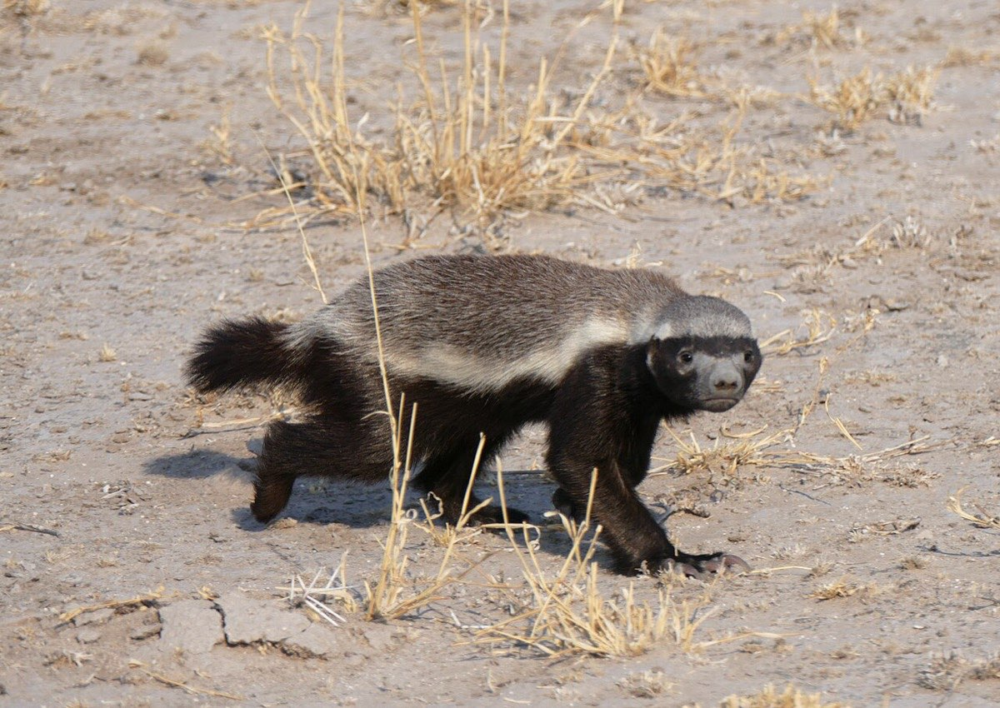

Where Does It Live?
Honey badgers live in hot, sunny places. They live in more places than almost any other badger!

Where in the world?
Honey badgers live in Africa.
They also live in Arabia and India.
Can you find the green parts on the map? That is where honey badgers live!

Map: Chermundy, via Wikimedia Commons, CC BY-SA 3.0.

What kind of place does it need?
- Grassland: big open fields of grass
- Dry land: hot places with little rain
- Woods: places with some trees
- Hills: rocky places and mountains
Most of all, a honey badger needs dirt it can dig in. It also needs lots of small animals to eat.
Where is its home?
- In the ground? Yes! It digs a tunnel called a burrow. It sleeps at the end of the tunnel.
- In a tree? Not really. It can climb trees to find food. But it does not live there.
- Other places? It also sleeps in cracks in rocks, in hollow logs, or in old holes dug by other animals.